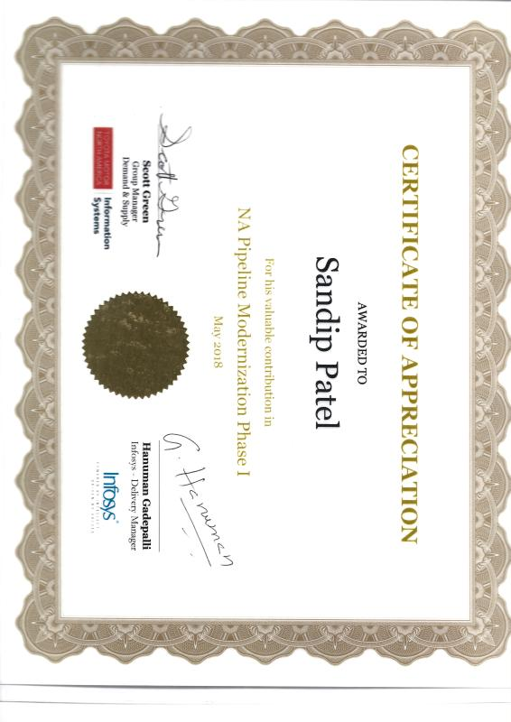

Software Engineer · Cybage Software
Aug 2010 – Oct 2012 · Pune
Technical design for 15+ enterprise applications; 20+ features delivered on schedule with zero critical production defects and a 99.5% deployment success rate.
Career
Twenty years across India and the United States, and one consistent direction: from writing the code, to designing the system, to advising the executives who fund it. What follows is the route, with the numbers attached.
About
I'm Sandip Patel. For twenty years I have designed and shipped secure, enterprise-grade platforms. The last five have been at Microsoft, where I architect governed, trustworthy agentic AI for organisations operating under real regulatory scrutiny.
What interests me is the part most AI programmes skip: whether the system can be overridden, rolled back, audited and kept safe when conditions degrade. Design-time governance is the easy half. The decisive failures happen at runtime, and that is where I do my best work.
That question runs through everything here: the client architecture, the peer-reviewed research, the open-source code and the commentary journalists come to me for. I started as an engineer in Mumbai in 2006 and I still read the diagrams before I read the deck.
Enterprise AI & cloud architecture · Texas
September 2023 – Present · Dallas–Fort Worth, Texas · Data, AI & App Innovation
April 2021 – September 2023 · Plano, Texas
Technology Architect · Plano, Texas
October 2012 – April 2021 · Plano, Texas
Six years of hands-on engineering · India
Architecture is only credible when the architect has carried a pager. These six years built enterprise applications in ASP.NET, C# and SQL Server, hardened financial systems for a major Indian bank, and kept commerce platforms serving 50,000+ daily users standing up.
Aug 2010 – Oct 2012 · Pune
Technical design for 15+ enterprise applications; 20+ features delivered on schedule with zero critical production defects and a 99.5% deployment success rate.
Dec 2009 – Jul 2010 · Mumbai
Financial-services applications including ICICI Bank's logical access management gateway, covering quarterly access review and approval across the bank's application estate. Data pipelines handling 100K+ records daily.
Mar 2008 – Oct 2009 · Mumbai
Client-facing application, database and systems development across 20+ engagements. Commerce and content platforms serving 50,000+ daily users; escalation owner for production incidents at 99% uptime.
Oct 2006 – Mar 2008 · Mumbai
Web application development, systems analysis and performance work, delivering 35% faster page loads, 90%+ approval on code review, and direct customer resolution at first contact.
Recognition

Microsoft quarterly recognition for Driving Excellence.

Microsoft quarterly recognition for Growth Mindset.

Toyota Motor North America & Infosys, for contribution to Toyota's first cloud migration programme.
Credentials
Eight Microsoft certifications, independently verifiable, plus the formal grounding underneath them.

AZ-303 / AZ-304

AI-102

AZ-500

AZ-104
DP-900
SC-900
AI-900
Microsoft Specialist · 70-532
North Maharashtra University, India
North Maharashtra University, India
Next step
If you are weighing a modernisation programme, an agent platform or an AI governance model, that experience is most useful early.